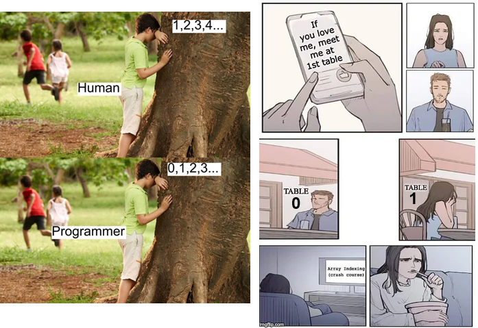

import numpy as np
import pandas as pd
import math
myVect = np.array([7.3, 22.5, 30.0, 25.3])
df = pd.DataFrame({"x": [1, 2, 3, 4], "y": [5, 6, 7, 8]})Python and R are powerful programming languages widely used in data science and in many cases they don’t feel much different
But R was developed by statisticians for statistical computing, modeling, and data visualization, while Python is more general-purpose language designed for readability, efficiency and scalability in large-scale computation across many possible uses.
Their syntax, typing rules and behavior reflect these different purposes…
Many basic aspects of syntax and functions may feel practically the same…
| Task | Python | R |
|---|---|---|
| Assignment | x = [1,2,3] |
x = list(1,2,3) or x <- list(1,2,3) |
| Indexing | x[0] |
x[1] |
| Comments | # like this |
# like this |
print(x) |
print(x) |
|
| Functions | sum(x) |
sum(x) |
| Functions | round(2/3, 3) |
round(2/3, 3) |
| Coercion | float("5.334") |
as.numeric("5.334") |
| Type check | type(x) |
typeof(x) |
| Logical values | True, False |
TRUE, FALSE |
…but for us, it might be a bit annoying that Python doesn’t offer built-in functions for statistical- and data-related tasks like
| Task | Python | R |
|---|---|---|
| average | np.mean(x) |
mean(x) |
| standard deviation | np.std(x) |
sd(x) |
| square root | np.sqrt(x) |
sqrt(x) |
| correlation | np.corrcoef(x, y) |
cor(x,y) |
| create data frame | pd.DataFrame(...) |
data.frame(...) |
| random normal | np.random.normal(0,1,size=1) |
rnorm(n=1) |
| normal cdf | scipy.stats.norm.cdf(1.96) |
pnorm(1.96) |
| linear model | smf.ols("y ~ x", data=df).fit() |
lm(y ~ x, data=df) |
.”In Python, the dot (“.”) has a very special role and it is part of the syntax
df.shape: access attribute of dataframe df;df.head(): access method attached to a DataFrame;math.sqrt(16): access method of a package (like :: in R);sklearn.linear_model: access submodule of a package;model.fit(): access function for fitting object model;my.data = 5: returns error in Python!On the contrary, in R it has no particular meaning and can be part of names
.”.”.” to access: (1) submodules of modules: statsmodels.formula.api, np.random; (2) class constructor methods: .DataFrame(), .ols(); (3) methods: .fit(), .normal(), .summary(); (4) attributes: .bic
.” Results: Ordinary least squares
================================================================
Model: OLS Adj. R-squared: 0.112
Dependent Variable: y AIC: 58.2074
Date: 2026-06-16 09:19 BIC: 61.1946
No. Observations: 20 Log-Likelihood: -26.104
Df Model: 2 F-statistic: 2.196
Df Residuals: 17 Prob (F-statistic): 0.142
R-squared: 0.205 Scale: 0.93708
-----------------------------------------------------------------
Coef. Std.Err. t P>|t| [0.025 0.975]
-----------------------------------------------------------------
Intercept -0.0722 0.2197 -0.3287 0.7464 -0.5358 0.3914
x1 -0.0934 0.2029 -0.4601 0.6513 -0.5215 0.3348
x2 -0.4399 0.2126 -2.0695 0.0541 -0.8884 0.0086
----------------------------------------------------------------
Omnibus: 1.038 Durbin-Watson: 1.576
Prob(Omnibus): 0.595 Jarque-Bera (JB): 0.190
Skew: -0.191 Prob(JB): 0.909
Kurtosis: 3.286 Condition No.: 1
================================================================
In Python you cannot index outside a list or vector
But you can use the built-in function append():
Python
[10, 11, 12, 13, 14, 15, 10, 11, 12, 13, 14, 15, 10, 11, 12, 13, 14, 15]['a', 'b', 'c', 'd', 'f', 'a', 'b', 'c', 'd', 'f', 'a', 'b', 'c', 'd', 'f']TypeError: can only concatenate list (not "int") to listR
Error in grades * 3: non-numeric argument to binary operatorIn Python, you may even multiply and add strings:
'BasicsPythonBasicsPythonBasicsPythonBasicsPythonBasicsPython''BasicsPython is a PhD course at Psychological Sciences'However, simple numerical operations on vectors may appear painful for us…
TypeError: can only concatenate list (not "int") to list…luckily, there are good packages for data science in Python! To obtain vectorized operations like those we expect for data analysis and we are accustomed to in R, we can use the numpy package (more on numpy later!):
Unlike in R, where syntactic symbols such as the curly brackets {} define code blocks entirely, Python requires indentation (i.e., spaces at the beginning of lines). This makes the code more readable… but also unforgiving: indentation is part of the syntax!
Incorrect indentation in Python raises errors 🤯
This enforces clarity in Python code, but requires discipline…
Remember that, in any case, writing tidy and readable code is a best practice!
With mutable types like lists, “=” creates a reference, not a copy like in R
This referencing allows for faster, convenient, and memory-efficient operations when editing large datasets / subdatasets, although of course it requires caution to avoid unintended modifications
To create a copy, you could use the .copy() method
Python